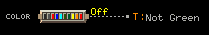

This sample is intended to demonstrate the use of trend data to perform some simple (but hopefully useful) calculations to generate a simple HTML report.
This example relies on special trend data that you probably aren't gathering by default. It looks for binary wire trends named "green_trn" that trend a value which is true whenever a zone's color is not green or grey. This will be true when the zone is "unhappy" or not satisfied. Something like: 
It is not necessarily problematic for a zone to be in this unhappy state at any given time. You actually would expect zones to move into the light blue or yellow bands regularly if any heating/cooling was needed. It probably does indicate a problem if zones stay in this condition all of the time. It might not be bad enough to trigger an zone temp alarm, but may still need further investigation.
This sample finds all of the zones that have the green_trn trend and total up the time each zone is "unhappy" over the specified 24 hr period. It presents the list of zones in order of unhappiness.
Deploy the Color Report sample add-on by executing the 'deploy' task and starting (if necessary) the server.
Browse to http://yourserver/colorreport (open on localhost). This should present a login page. Log in with any valid operator and password.
You can type in a date and a location. The "Run Report" button will generate the list of zones beneath the specified location in order of unhappiness.
This web app add-on is a good example of access to basic trend data. Happy.java demonstrates finding Trend sources, reading a range of trend data, and using a TrendProcessor.
Happy.determineUnhappiness finds trend sources using:
Collection<DigitalTrendSource> sources = start.find(DigitalTrendSource.class,
Acceptors.enabledTrendSourceByName(tsName));
A trend range specification (selecting a range of data out of a particular trend source) is created using:
TrendRange range = TrendRangeFactory.byDateRange(startDate, endDate);
The data is retrieved and then processed using:
TrendData<TrendDigitalSample> tdata = source.getTrendData(range); UnhappyTimeProcessor processor = tdata.process(new UnhappyTimeProcessor());
While data can be read directly from the TrendData object, it is often best to use a custom TrendProcessor. The system can then intelligently handle missing data (from sources being enabled/disabled, communication loss, or other conditions).